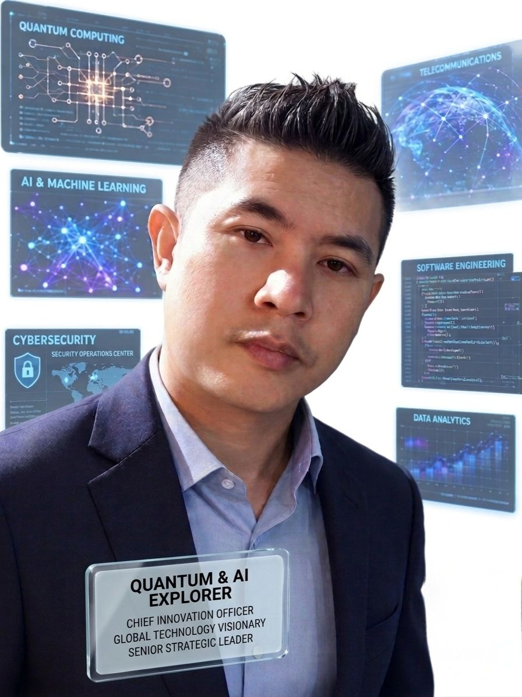

AI & Quantum Computing Projects
 Artificial Intelligence
Artificial Intelligence
 Quantum Computing
Quantum Computing
 Cybersecurity & AI
Cybersecurity & AI
 Future Technologies
Future Technologies

Chatri Khatfan is a seasoned technology executive and engineering strategist with extensive international experience leading advanced technical operations, telecommunications infrastructure, and emerging technology initiatives across Thailand and Japan.
Throughout his distinguished professional career, he has successfully directed multidisciplinary engineering teams, overseen mission-critical infrastructure projects, and contributed to the technological evolution of multiple enterprises operating within highly competitive sectors.
Following his leadership responsibilities at Thai Audiotex Limited and TAS Mobile Limited, he further strengthened his expertise through his role as Project Manager at Locus Telecommunications Inc., subsequently returning to assume the position of Head of Technical Operations, where he supervised strategic technical development and operational continuity for both organizations over a nine-year period.
Since 2010, he has served as Co-Founder and Technical Director of Utel Corporation (Japan), where he has played an instrumental role in defining long-term technological vision, software and systems architecture, infrastructure modernization, and innovation strategy.
Mr. Khatfan earned a Bachelor of Engineering in Electrical and Computer Engineering from the Queensland University of Technology (QUT), complemented by postgraduate studies in Computer Systems Engineering at the University of Queensland (UQ). His internationally focused academic background, supported through scholarship programs, cultivated a strong global perspective and advanced analytical capabilities.
His areas of expertise encompass artificial intelligence, machine learning systems, embedded technologies, network architecture, enterprise infrastructure, cloud computing, cybersecurity, software engineering, Internet of Things (IoT), quantum computing research, and advanced computational modeling.
Years of Technical Leadership & Strategic Management
Machine Learning, Predictive Systems & Intelligent Automation
Hybrid Quantum-Classical Computational Research
Technology Operations Across Thailand & Japan
Directed operational and technical initiatives, contributing to enterprise growth and organizational development.
Managed telecommunications and mobile infrastructure projects while advancing into executive leadership responsibilities.
Served as Project Manager overseeing technical execution, systems coordination, and infrastructure deployment.
Supervised large-scale operational systems, enterprise infrastructure, and strategic technical planning for nearly a decade.
Co-Founder and Technical Director responsible for innovation strategy, advanced systems architecture, and future technology initiatives.
Artificial Intelligence
Quantum Computing
Cybersecurity & AI
Future Technologies
Open to collaboration opportunities involving artificial intelligence, advanced systems engineering, quantum computing research, enterprise technology strategy, and emerging innovation initiatives.